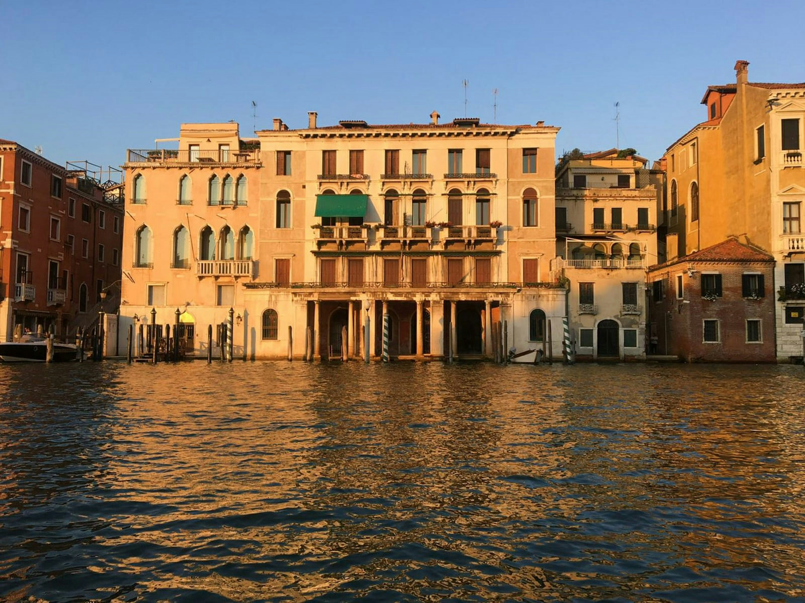
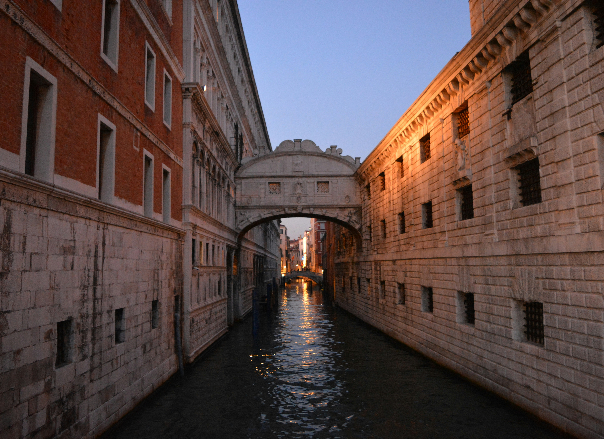

Hoş geldiniz! GeziOM, seyahat tutkunlarının vazgeçilmez rehberi ve keşif partneri olarak karşınızda. Size dünyanın dört bir yanındaki en gizli köşeleri, keşfedilmemiş güzellikleri ve unutulmaz deneyimleri sunuyoruz. Şehirlerin kalbinde, doğal güzelliklerin derinliklerinde ve kültürel hazinelerin arasında yapacağınız yolculuklarda GeziOM, size ilham verecek, yol gösterecek ve seyahatlerinizi daha anlamlı kılacak. Planlamadan keşfe, önerilerden pratik ipuçlarına kadar her şey burada, sizin için hazır. GeziOM ile her adımda yeni bir macera başlatın ve gezmenin keyfini çıkarın!
Venedik, İtalya'nın kuzeydoğusunda Adriyatik Denizi'nin kıyısında yer alan eşsiz bir şehir. Kanalları, tarihi yapıları ve romantik atmosferiyle ünlü olan Venedik, her yıl milyonlarca turistin ilgisini çekiyor. Şehir, yüzyıllar süren tarihinin izlerini taşıyan sokakları ve köprüleriyle, ziyaretçilerine unutulmaz bir deneyim sunuyor. İşte Venedik’in gezilecek yerleri, yapılacak aktiviteleri ve şehirde geçireceğiniz zamanı en iyi şekilde değerlendirmenize yardımcı olacak bilgiler:
Venedik’in kalbi, şehrin en ünlü ve hareketli noktası olan San Marco Meydanı'ndadır. Meydan, şehrin en önemli yapılarından biri olan San Marco Bazilikası’na ev sahipliği yapar. Bizans mimarisinin etkileyici örneklerinden biri olan bazilika, mozaikleri ve etkileyici iç mekanıyla göz kamaştırıyor. Meydanın bir köşesinde, Venedik’in simgelerinden biri olan Campanile di San Marco (San Marco Çan Kulesi) yer alıyor. Çan kulesine çıkarak, şehrin ve kanalların panoramik manzarasını izleyebilirsiniz.
Büyük Kanal, Venedik’in ana su yolu olup, şehrin kalbinden geçmektedir. Şehri keşfetmenin en güzel yollarından biri, bir vaporetto (su otobüsü) veya gondolla bu kanalda yolculuk yapmaktır. Büyük Kanal boyunca sıralanan tarihi binalar ve saraylar, Venedik’in zarif geçmişini yansıtır. Özellikle akşam saatlerinde yapacağınız bir gondol gezisi, romantik bir atmosfer sunar ve şehri farklı bir açıdan görmenize yardımcı olur.
Venedik'in dışındaki adalar da keşfedilmeye değerdir. Murano Adası, ünlü Venedik cam işçiliğiyle tanınır. Burada, cam atölyelerini ziyaret ederek cam üfleme sanatını izleyebilir ve birbirinden güzel cam objeleri satın alabilirsiniz. Burano Adası ise, renkli evleri ve geleneksel dantelleri ile ünlüdür. Burano’nun renkli sokaklarında dolaşmak ve geleneksel dantel işçiliğini görmek, size keyifli bir deneyim sunacaktır.
